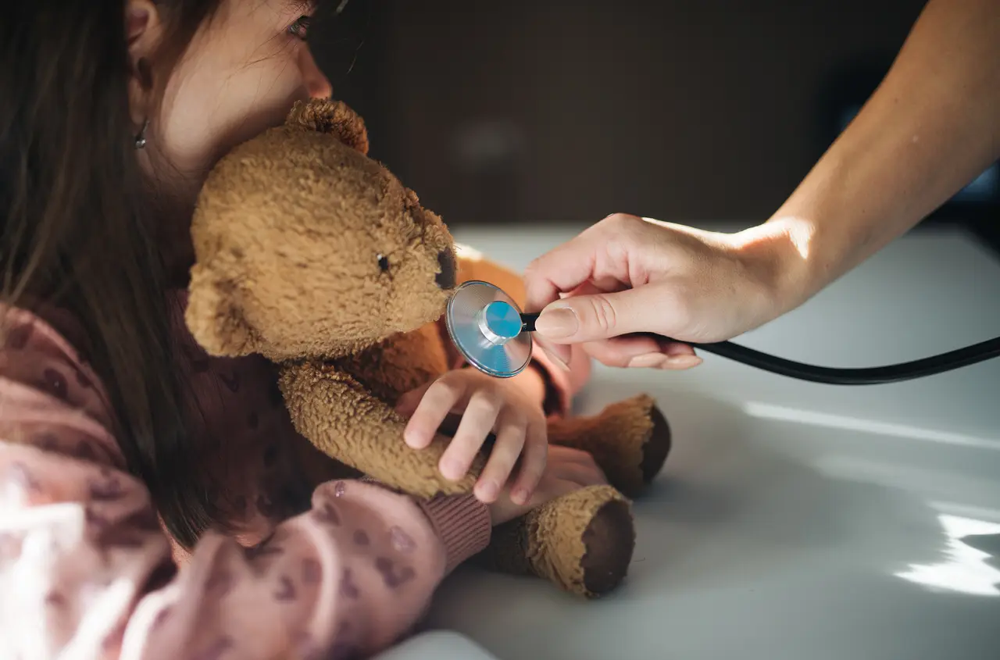

Baby & child wellness checks
Growth, development milestones, feeding and sleep, checked at a relaxed pace with time for your questions.
Ask about thisOpen daily in TTDI
A neighbourhood clinic for babies, kids, parents and grandparents. Friendly doctors, evening hours and plenty of patience, right in Taman Tun Dr Ismail.

Sample figures for this fictional concept clinic.
Our care
Pick who needs care to see the services that fit. Not sure? Just send us a message.
Growth, development milestones, feeding and sleep, checked at a relaxed pace with time for your questions.
Ask about thisFollowing the national immunisation schedule, plus optional vaccines discussed with you. Tips to make the moment easier are part of the visit.
Ask about thisSame-day review for common childhood illnesses, with clear advice on what to watch for at home and when to return.
Ask about thisOngoing care plans written for families and schools, inhaler technique checks and referral when needed.
Ask about thisHealth checks and medical forms for school entry, camps and sports clubs.
Ask about thisAcute illness, infections, injuries and anything else on your mind. One doctor who knows your whole family.
Ask about thisBlood pressure, blood sugar, cholesterol and lifestyle review, tailored to your age and family history.
Ask about thisPap smears, contraception advice, pregnancy confirmation and early antenatal guidance with a female doctor available.
Ask about thisRegular reviews for diabetes, hypertension and thyroid conditions, with written targets you can track.
Ask about thisVaccines and practical advice before trips, including umrah and haj requirements.
Ask about thisLonger appointments to look at the whole picture: mobility, memory, mood, hearing and vision.
Ask about thisBring every medicine in a bag. We check doses, interactions and whether each one is still needed.
Ask about thisInfluenza and pneumococcal vaccines, discussed according to your health and current guidelines.
Ask about thisBalance checks, home safety tips and bone-health advice, with physiotherapy referral when useful.
Ask about thisTime for family carers to ask questions, plan ahead and find local support services.
Ask about thisCommon reasons families visit:
Your first visit
Tell us who is coming and why on WhatsApp. Walk-ins are welcome too, with booked visits seen first.
Quick registration with your IC or passport. Children get a play corner while you wait.
Time to talk and a gentle examination. We explain what we find in everyday words.
Medicines from our dispensary, a written care note and advice on when to come back.
For some conditions we check in a few days later to see how you are getting on.
Safety & hygiene
Vaccination and wellness visits wait apart from children with fever or cough.
Vaccine fridges are temperature-logged around the clock.
Paediatric cuffs, scales and gentle thermometers make checks quicker and kinder.
Surfaces disinfected between patients and air purifiers in every room.
Our team
Family physician & clinic lead
Loves long-term family care and making chronic conditions feel manageable.
MBBS, MMed (Family Medicine) · 14 years (fictional)
Paediatric-focused GP
Known for stickers, patience and very clear explanations for parents.
MD, Dip. Child Health · 10 years (fictional)
Family doctor, women's health
Women's health, antenatal guidance and adolescent care.
MBBS, Dip. Women's Health · 8 years (fictional)
Senior nurse
Runs our vaccination clinic and makes every child feel brave.
Registered nursing diploma · 12 years (fictional)
Fictional team profiles. Credentials are illustrative and do not represent real registrations.
Inside the clinic
Illustrative stock photos from Wikimedia Commons; not a real Teduh clinic.
Kind words
Dr. Tan turned my son's vaccination into a game. He left asking when he can come back.
My mother's medication review was so thorough. They took time to explain everything to both of us.
Evening hours are a lifesaver for working parents, and the care feels personal.
Sample testimonials written for this concept; not real patient reviews.
Guides & FAQs
Yes. Walk-ins are welcome during opening hours. Messaging ahead on WhatsApp helps us reduce your waiting time.
If your child has difficulty breathing, is unusually drowsy or floppy, has a seizure, a rash that does not fade when pressed, or you are very worried, call 999 or go to the nearest emergency department.
IC or passport, your child's health record book, any medicines you take, and your insurance or company panel card if you have one.
Yes. Let us know when you message and we will arrange a time with a female doctor where possible.
Medical certificates are issued when clinically appropriate after a consultation.
No. This website has no forms or booking system and stores no personal data. All enquiries happen on WhatsApp.
Kids
How your child is behaving often matters more than the thermometer. Signs to watch at home.
Everyday health
Simple habits for school runs, outdoor play and older relatives who forget to drink.
Seniors
Five small changes that help prevent falls, from lighting to bathroom grips.
Health tips are general information, not a substitute for seeing a doctor.
Find us
Panels & insurance: we aim to work with many company panels and insurers. Coverage depends on your plan, so please message us your panel or insurer name before visiting.
Ask for directions